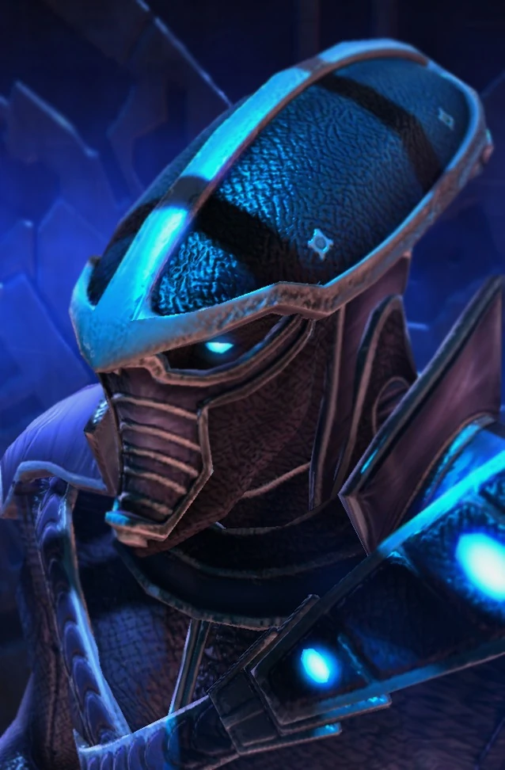

Излучатель пустоты
| Излучатель пустоты | |
|  | |
| Информация о юните | |
| Тип: | Боьшая воздушная единица |
| Описание: | Воздушный ударный корабль |
| Построен из: | Звездные врата |
| Требование: | Маяк флотилии |
| Стоимость: |  250 250  150 150  43 43  4 4 |
| Горячие клавиши: | V |
| Атака 1: Призматический луч | |
| Цели: | Наземные/Воздушные |
| Урон | 6(+1) |
| DPS: | 16.8 (+2.8) |
| Перезарядка: | 0.36 |
| Бонус: | +4 по бронированным +10 по бронированным (Перенастройкой линз) |
| Бонус DPS: | +11.2 по бронированным +28 по бронированным (Перенастройкой линз) |
| Ранг: | 6 |
| Статистика юнита | |
| Защита: |  150 150  100 100  0 (+1) 0 (+1) |
| Атрибуты: | Бронированный Механический |
| Зрение: | 10 |
| Скорость: | 3.85(+0.798) 2.888(-0.264) с перенастройкой линз |
| Силен против: | Крейсер Губитель Ураган |
| Слаб против: | Викинг Муталиск Феникс |
Обзор
Излучатель пустоты — корабль сопровождения протоссов Темных Тамплиеров; результат объединения технологий Неразимов и Кхалаи и одно из первых в своем роде совместных творений Неразим-Кхалаи. Он предназначен для использования против бронированных целей. Талдаримы захватили несколько скатов Бездны и снабдили их кристаллами осколков крови, чтобы создать эсминцы. Поскольку кристаллы кровавых осколков собрать нелегко, талдаримы без колебаний используют имеющееся вооружение корабля, когда у них не хватает его, чтобы превратить луч пустоты в эсминец.
Излучатели пустоты могут действовать как в космосе, так и в планетарных атмосферах и могут приземляться.
Проектирование боевой единицы
Излучатель пустоты построен вокруг призматического ядра — продолговатого кристалла синтетического происхождения, который служит практически вечным источником энергии. Ядро получает энергию как из Пустоты, так и из Кхалы, фокусируя их через фазовые кристаллы и формируя самоподдерживающуюся реакцию. Ядро состоит из нескольких слоев, чтобы сдерживать и стабилизировать буйный водоворот внутри, превращая постоянное состояние потока в полезную энергию для оружия, двигателей и систем корабля.
Бронированный корпус излучателя пустоты состоит из пластин, изготовленных из гибкого сплава, и рассчитан на то, чтобы выдерживать нагрузки, вызванные исключительной мощью ядра. Молекулярная стабильность этого сплава очень высока, качество, которое не позволяет энергиям ядра разрушать его атомные связи и разрушать его структуру изнутри.
Другие внутренние особенности излучателя пустоты включают в себя мостик, на котором у командира есть кресло, на котором он может сидеть. На мостике есть командный помост. Терминалы, обслуживаемые экипажем корабля, простираются от кресла концентрическими кругами, позволяя командиру излучателя пустоты иметь четкий обзор всего окружающего персонала. К такому персоналу относятся штурман и офицер по ликвидации последствий аварии. На мостике могут отображаться голограммы, например, звездные карты.
Командир имеет право на личную каюту. На корабле также есть медицинское крыло, укомплектованное медиками для лечения раненых воинов и членов экипажа. Корабль содержит отсеки для хранения и ряд ремонтных дронов, а также ангар, в котором можно перевозить такие транспорты, как варп-призмы. Сенсоры на борту излучателя пустоты способны обнаруживать сигнатуры маскировки терранов.
Чистильщики смогли принять излучателей пустоты в свой собственный арсенал, объединив исследования трех рас в одном элегантном сосуде. Ихан-рии использовали подобные корабли, которые могли выпускать луч энергии Бездны.
После Конца Войны новое поколение излучателей пустоты объединило стиль древних тамплиеров Золотого века экспансии с теневой окраской неразимов.
Вооружение
Обычно ядро излучателя пустоты контролируется системой проекторов поля потока. Однако, когда луч Бездны зафиксировался на цели и развернул эти проекторы, он может стрелять обжигающими лучами энергии, которые со временем становятся экспоненциально более мощными. Излучатель пустоты испепелил даже тяжелобронированные сооружения и боевые корабли, что заставило некоторых терранов поверить, что в конечном итоге он заменит авианосец в качестве флагмана Великого Флота. Несколько линз должны стабилизировать его выходную энергию, а фазовый кристалл используется для преобразования его в когезионный пучок. Проекторы поля потока усиливают мощность ядра. Эти проекторы направляют потоки нестабильной энергии в фазовый кристалл, повышая эффективность призматического луча против тяжелобронированных целей.
Протоссам требуется долгая подготовка, чтобы овладеть энергиями Бездны, участвующими в создании лучей, и даже тогда немногие могут овладеть всей мощью проектора. Тем, кто этим занимается, присваивается звание/должность/ «Линза Пустоты». В то время как технологии Кхалаи самой по себе достаточно, чтобы выровнять и сдержать силы Кхалы, требуется Темный Тамплиер, чтобы сфокусировать силу Бездны в пригодной для использования форме (отсюда необходимость линзы Бездны). Без дисциплинированного разума неразимов, силы создаваемые лучом Бездны, станут слишком дикими и выйдут из-под контроля.
В 2506 году фазовый кузнец Каракс изобрел соляритовые линзы для луча Бездны, основываясь на изучении Копья Адуна. Линзы позволяли излучателям пустоты направлять свои лучи дальше, чем обычно, пока их призматические линзы оставались правильно выровненными.
Игровая единица
Атака пустотного луча начинается с выстрела одной лучевой рукой. Со временем все оружие будет стрелять. Корабль последует за целью и продолжит атаку.
Излучатели пустоты сильны против крейсеров терранов, губителей, материнских кораблей и авианосцев и слабы против викингов, фениксов, муталисков и гидралисков. Излучатели пустоты противостоят специализированным противовоздушным подразделениям или большому количеству недорогих подразделений. В свою очередь, излучатели пустоты должны работать сообща с другими юнитами, чтобы они отвлекали противника, пока излучатель заряжается.
Лучи Бездны хорошо работают с фениксами в качестве рейдовой единицы, используя гравитонный луч.
Луч Бездны наиболее эффективен против юнитов и строений с высокими показателями здоровья, поскольку дает время для стрельбы из всех орудий и максимизирует скорость урона. Между переключением целей есть заметное время, что делает его менее эффективным против групп более слабых юнитов.
Если при уничтожении цели и выборе новой цели в течение короткого промежутка времени были задействованы дополнительные лучи, луч Пустоты с самого начала поразит новую цель в этом состоянии. Это позволяет быстро уничтожить множество меньших юнитов. Пустотный луч по-прежнему уязвим для роев меньших противовоздушных юнитов, пока он атакует крупную цель.